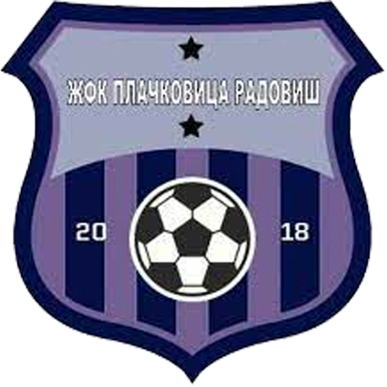

Прва ЖФЛ 18/19
| Поз. | Тим | Н | Поб | Нер | Пор | ДГ | ПГ | ГР | Бод. |
|---|---|---|---|---|---|---|---|---|---|
| 1 |
 Скопје 2014
Скопје 2014
|
23 | 23 | 0 | 0 | 159 | 7 | 152 | 69 |
| 2 |
 Истатов
Истатов
|
21 | 19 | 1 | 1 | 184 | 7 | 177 | 58 |
| 3 |
 АС Јунајтед
АС Јунајтед
|
22 | 16 | 2 | 4 | 88 | 20 | 68 | 50 |
| 4 |
 Брера Тиверија
Брера Тиверија
|
21 | 14 | 2 | 5 | 103 | 25 | 78 | 44 |
| 5 |
 Каменица Саса
Каменица Саса
|
22 | 13 | 1 | 8 | 74 | 47 | 27 | 40 |
| 6 |
 Топ Гол
Топ Гол
|
26 | 12 | 3 | 11 | 112 | 82 | 30 | 39 |
| 7 |
 Речица
Речица
|
25 | 12 | 3 | 10 | 66 | 56 | 10 | 39 |
| 8 |
 Цевитана
Цевитана
|
25 | 12 | 2 | 11 | 86 | 61 | 25 | 38 |
| 9 |
 Тетова 2017
Тетова 2017
|
19 | 10 | 1 | 8 | 77 | 54 | 23 | 31 |
| 10 |
 Кочани
Кочани
|
22 | 5 | 3 | 14 | 45 | 106 | -61 | 18 |
| 11 |
 Атлетико
Атлетико
|
24 | 5 | 3 | 16 | 37 | 113 | -76 | 18 |
| 12 |
 Љуботен
Љуботен
|
25 | 2 | 3 | 20 | 16 | 160 | -144 | 9 |
| 13 |
 Борец
Борец
|
23 | 2 | 2 | 19 | 9 | 149 | -140 | 8 |
| 14 |  Плачковица | 18 | 0 | 0 | 18 | 4 | 173 | -169 | 0 |